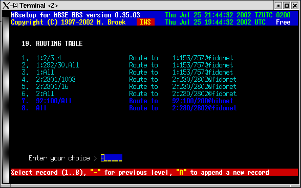
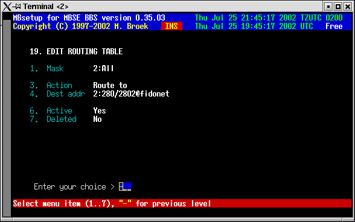

Last update 25-Oct-2001
MBSE BBS Setup - Edit Routing Table.
Introduction.
First an important note: normal nodes, hubs and hosts should not need this to setup. MBSE is smart enough to do normal netmail routing using the nodelist. There are cases when you might need this, for example if you are a RC or if you have special routing arrangements via internet nodes. Think at least twice before adding entries here. You can always use the mbfido test command to check if the standard routing is enough. You should also check to see what you have done with mbfido test if the entries in this table do what you expect them to do. During route tests it is wise to temporary switch on extra debug logging with mbsetup menu 1.5.16.17 and check the information in the logfile, there is a lot of information about the descisions that are made.
When you edit a route table, the entries you add might not be in the right order, this will be done after you leave the editor. Sorting is done in order of zone, exact nodes first, then globals. If you end the routing table with a global route, ie. to All zones, then the standard routing isn't used anymore and only the table is consulted. This might not be needed, most likely is that you only need to add the routes to the non-standard nodes. The table is processed from the first entry to the last and stops when an entry matches. If there was no match, the default routing will be used.
Edit Routing Table.
When you open the table you see something like this:

The edit screen looks like this:

Mask The destination mask to test for. Action Route to, Direct or Default. Dest addr The destination node in case of Route to. Active If this rule is active. Deleted If this rule must be deleted.
If the Action is Route to then all mail matching the Mask will be routed to the node setup in Dest addr. This node must be present in your setup. If the Mask is Direct then mail to node node(s) matching the Mask will be sent direct, not routed. If the action is Default then the nodes matching the Mask will use the standard default routing. More actions will be added later.
 Back to index
Back to index